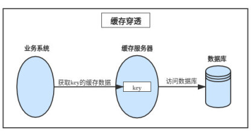
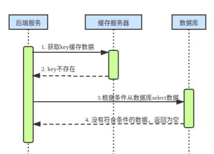
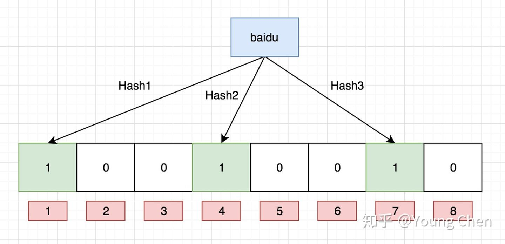
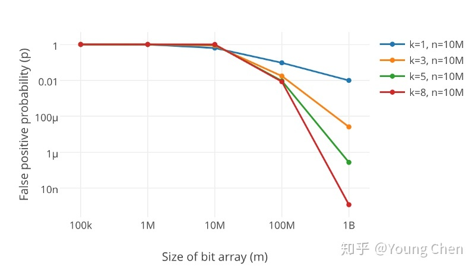

缓存穿透、缓存击穿、缓存雪崩 #
1 缓存穿透 #
1.1 含义 #
- 缓存穿透是指数据库中没有符合条件的数据，缓存服务器中也就没有缓存数据，导致业务系统每次都绕过缓存服务器查询下游的数据库，缓存服务器完全失去了其应有的作用。
- 如果黑客试图发起针对该
key的大量访问攻击，数据库将不堪重负，最终可能导致崩溃宕机。 - 从下图可以看出查询时是直接穿过缓存到达下游数据库，大致业务流程如下图所示：  
1.2 解决方法 #
1.2.1 接口层增加校验 #
- 在接口层增加校验，不合法的参数直接返回。
- 不相信任务调用方，根据自己提供的接口规范来，作为被调用方，要考虑可能任何的参数传值。
1.2.2 存储空值或默认值 #
- 虽然数据库中没有符合条件的数据，可以考虑缓存空值或者适合业务的默认值，来缓解这种情况。
- 为了降低数据的不一致，需要注意两点：
- 缓存的过期时间需要设置的比较短。
- 当数据库数据更新时也需要及时更新缓存中对应的数据。
1.2.3 为 IP 设置访问阈值 #
- 正常用户不会这样暴力攻击，只有是恶意者才会这样做，可以在网关 Nginx 作一个配置项，为每一个 IP 设置访问阈值。
1.2.4 使用布隆过滤器 #
1.2.4.1 背景 #
- 假如我们需要过滤某些不安全的网页，现在有 100 亿个黑名单页面，每个网页的 URL 最多占用 64 字节，现要设计一种网页过滤系统，可以根据网页的 URL 判断该网页是否在黑名单上，要求该系统允许有万分之一以下的判断错误率，并且使用的额外空间不要超过 30G。
- 可以采用以下几种方案：
- 将访问过的 URL 保存到数据库：每次需要过滤网页就需要启用一个数据库
select查询，且当数据量变得非常庞大后，关系型数据库查询的效率会变得很低。 - 用 HashSet 将访问过的 URL 保存起来：这样只需要接近 $O(1)$ 的代价就可以查到一个 URL 是否被访问过了，但是内存消耗太大（存储容量占比高，考虑到负载因子的存在，通常空间是不能被用满的，一旦我们的值很多，例如上亿的时候，那么 HashSet 占据的内存大小就变得很可观了）。
- URL 经过 MD5 或者 SHA-1 等单向哈希后再保存到 HashSet 数据库：字符串经过 MD5 散列处理后的信息摘要长度只有 128bit，SHA-1 处理后也只有 160bit，因此方法 3 比方法 2 节省了好几倍的内存。
- BitMap 的方法：建立一个 BitSet，将每个 URL 经过哈希函数映射到某一位，这样消耗内存是比较少的，但缺点是单一哈希函数发生冲突的概率太高。
- 将访问过的 URL 保存到数据库：每次需要过滤网页就需要启用一个数据库
1.2.4.2 含义 #
- 布隆过滤器（Bloom Filter）实际上是一个很长的二进制向量和一系列随机映射函数，主要用于检索一个元素是否在一个集合中。
- 他的优点是空间效率和查询时间都远远超过一般的算法，缺点是有一定的误识别率和删除困难。
1.2.4.3 原理 #
-
布隆过滤器是一个
bit向量或者说bit数组，如下图所示：
-
如果我们要映射一个值到布隆过滤器中，我们需要使用多个不同的哈希函数生成多个哈希值，并为每个生成的哈希值指向的
bit位置 1，例如，针对值baidu和三个不同的哈希函数分别生成了哈希值 1、4、7，则上图转变为：  -
假设我们现在再存一个值
tencent，如果哈希函数返回 3、4、8 的话，图继续变为：
-
值得注意的是，4 这个
bit位由于两个值的哈希函数都返回了这个bit位，因此他被覆盖了。 -
假设现在我们想查询
dianping这个值是否存在，哈希函数返回了 1、5、8 三个值，结果我们发现5 这个bit位上的值为 0，说明没有任何一个值映射到这个bit位上，因此我们可以很确定地说dianping这个值不存在。 -
假设我们现在想查询
baidu这个值是否存在的话，那么哈希函数必然会返回 1、4、7，然后我们检查发现这三个bit位上的值均为 1，此时我们不能说baidu一定存在，因为随着增加的值越来越多，被置为 1 的bit位也会越来越多，这样某个值taobao即使没有被存储过，但是万一哈希函数返回的三个bit位都被其他值置为了 1，那么程序还是会判断taobao这个值存在。需要注意的地方：
- 在布隆过滤器中，字符串加入了就不能被删除，因为删除会影响其他字符串。
- 布隆过滤器使用了 $k$ 个哈希函数，每个字符串跟 $k$ 个
bit位对应，从而降低了冲突的概率。
1.2.4.4 如何选择哈希函数个数和布隆过滤器长度 #
-
很显然，过小的布隆过滤器很快所有的
bit位均为 1，那么查询任何值都会返回可能存在，起不到过滤的目的了，布隆过滤器的长度会直接影响误报率，布隆过滤器越长，误报率越小。 -
另外，哈希函数的个数也需要权衡，个数越多则布隆过滤器
bit位置为 1 的速度越快，布隆过滤器的效率越低，但是如果太少的话，我们的误报率会变高。 -
哈希函数个数和布隆过滤器长度对布隆过滤器误报率的影响如下图所示，其中 $k$为哈希函数的个数，$m$ 为布隆过滤器的长度，$n$ 为插入的元素个数，$p$ 为误报率： 当 $k$、$m$、$n$ 满足如下关系时，误差率 $p$ 最小：
$$ m = -\frac{nlnp}{\left( ln2 \right)^2} $$
$$ k = \frac{m}{n}ln2 $$
1.2.4.5 适用场景 #
- 大数据判断是否存在：
- 这就可以实现出上述的去重功能，如果我们的服务器内存足够的话，那么使用 HashMap可能是一个不错的解决方案，理论上时间复杂度可以达到 $O(1)$ 的级别，但是当数据量较大时，还是只能考虑布隆过滤器。
- 缓解缓存穿透的问题：
- 利用布隆过滤器我们可以预先把数据查询的主键（比如用户 ID 或者文章 ID）缓存到过滤器中，当根据 ID 进行数据查询的时候，我们先判断该 ID 是否存在，若存在的话，则进行下一步处理，若不存在的话，直接返回，这样就不会触发后续的数据库的查询。
- 需要注意的是缓存穿透不能完全解决，只能将其控制在一个可以容忍的范围内。
- 爬虫/邮箱等系统的过滤：
- 平时我们一些正常的邮件也会被放进垃圾邮件目录中，这就是使用布隆过滤器误判导致的。
- 识别恶意 URL：
- Google Chrome 使用布隆过滤器识别恶意 URL。
2 缓存击穿 #
2.1 含义 #
- 缓存击穿是指一个
key非常热点，在不停地扛着大并发，大并发集中对这一个点进行访问，当这个key在失效的瞬间，持续的大并发就穿破缓存，直接请求数据库，导致数据库处于负载状态。
2.2 解决方法 #
2.2.1 使用互斥锁 #
-
这是比较常用的方法，就是在缓存失效的时候（判断拿出来的值为空），不是立即去查询数据库，而是先使用缓存工具的某些带成功操作返回值的操作（比如 Redis 的
SETNX或者 Memcache 的ADD）去set一个mutex key，当操作返回成功时，再进行查询数据库的操作并回设缓存，否则，就重试整个get缓存的方法。 -
具体的互斥代码如下：
function get($key){ $value = $redis->get($key); if($value == null){ //不存在，设置 3min 的超时，防止 del 操作失败的时候，下次缓存过期一直不能查询数据库 if ($redis->setnx("key_mutex", 1, 3 * 60) == 1){ $value = "";//这是查询数据库文件 $redis->set(key, value, expire_secs); $redis->del(key_mutex); }else{ //这个时候代表同时候的其他线程已经查询数据库并回设到缓存了，这时候重试获取缓存值即可 sleep(50); get(key); //重试 } }else{ //存在则直接返回 return $value; } }
2.2.2 异步更新 #
- 异步更新是指把这个热点
key设置为永不过期，然后异步定时更新缓存，比如后台有个值守线程专门定时频繁地去检测缓存，一旦发现被踢掉，就需要立刻更新缓存。
3 缓存雪崩 #
3.1 含义 #
- 缓存雪崩是指在同一个时间，缓存大批量的失效，然后所有的请求都打到 DB 数据库，导致 DB 数据库直接扛不住崩了。
- 比如，电商首页缓存，如果首页的
key全部在某一时刻失效，刚好在那一刻有秒杀活动，那这样的话就所有的请求都打到了 DB，并发大的情况下 DB 必然扛不住，没有其他降级之类的方案的话，DBA 也只能重启 DB，但是这样又回被新的流量搞挂。
3.2 解决方法 #
- 采取不同分类的数据，使用不同周期的失效时间。
- 同一分类的数据，在失效时间上加上随机因子，如果是特别热门的数据，也可以设置永不过期，有更新操作再更新缓存就可以。